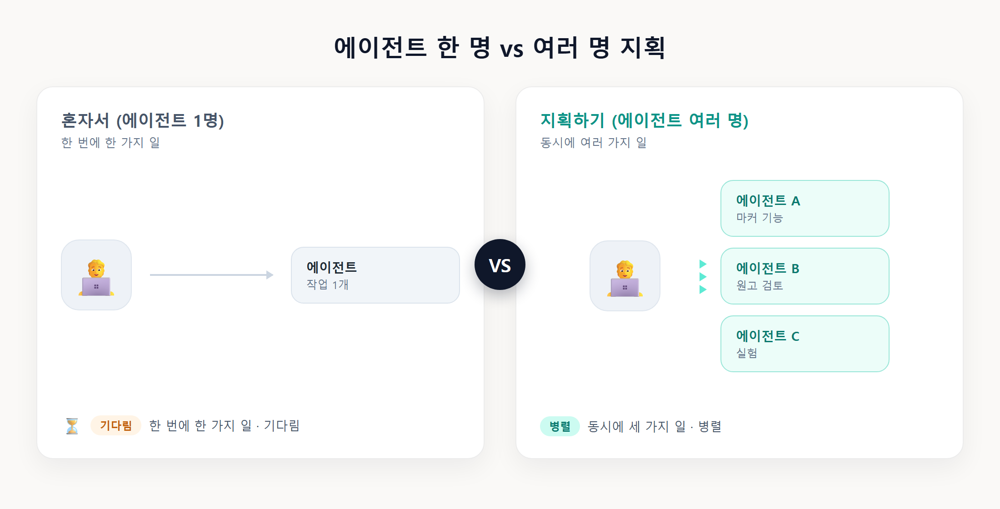
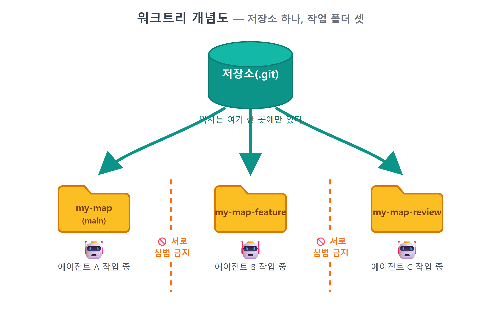
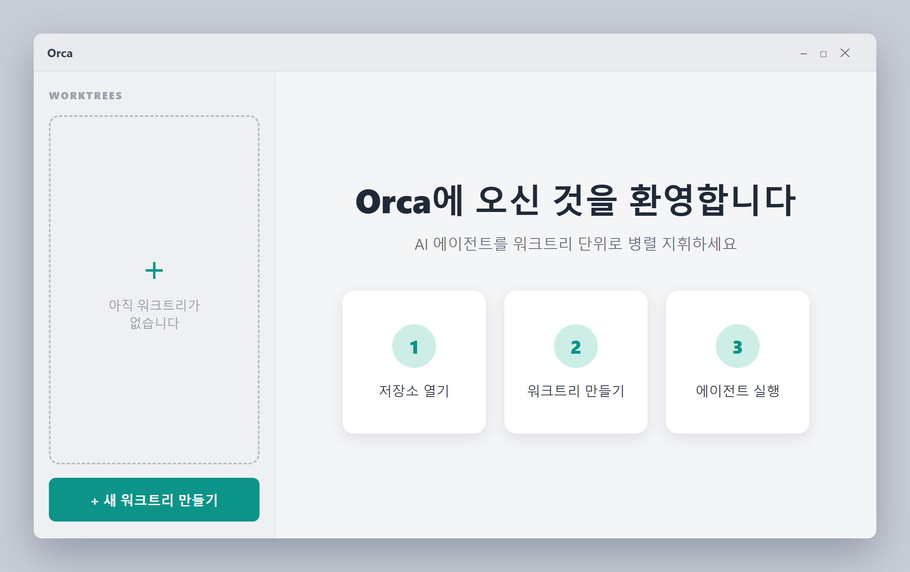
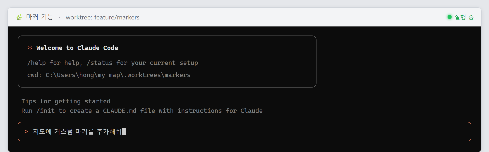
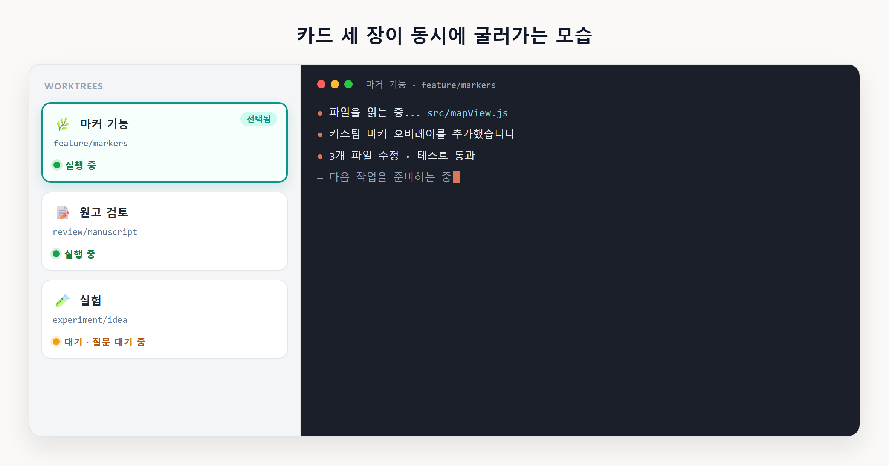
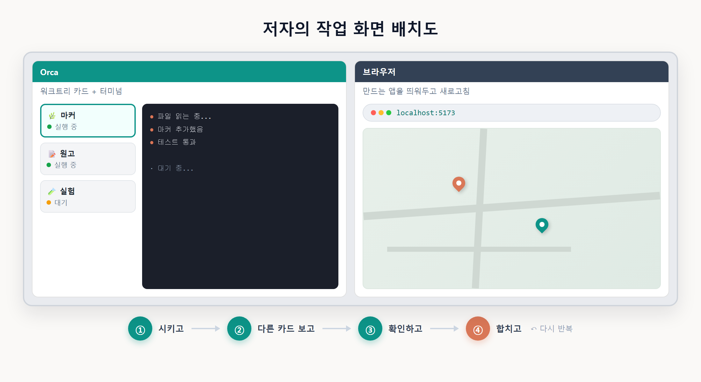

6장 Orca로 에이전트 지휘하기¶
이 장에서 배우는 것
- 여러 AI 에이전트를 동시에 부리는 도구, Orca가 무엇인지 이해합니다
- 바이브코딩의 숨은 주역인 git 워크트리(worktree) 개념을 익힙니다
- Orca 터미널에 Claude Code를 띄우고 작업을 병렬로 돌리는 흐름을 배웁니다
- 저자가 실제로 쓰는 화면 구성을 구경하며 나만의 작업 방식을 상상해 봅니다
6.1 에이전트가 하나면 아쉬워지는 순간¶
4장에서 Claude Code를 설치하고 첫 대화를 나눠 보셨습니다. 아마 이런 생각이 드셨을 겁니다. "오, 시키면 진짜 하네?" 맞습니다. 그런데 조금만 더 쓰다 보면 새로운 아쉬움이 생깁니다.
Claude Code에게 일을 시키면, 에이전트가 파일을 읽고 코드를 고치는 동안 우리는 기다립니다. 1~2분짜리 작업이면 괜찮은데, 큰 작업을 시키면 5분, 10분씩 걸리기도 합니다. 그 시간 동안 멍하니 화면만 보고 있자니 아깝지요. 게다가 이런 상황도 생깁니다.
- 지도에 마커 찍는 기능을 만드는 동안, 사이드바 디자인도 손보고 싶다
- 에이전트 A에게 기능을 만들게 하고, 에이전트 B에게는 A가 만든 코드를 검토시키고 싶다
- 실험적인 수정을 해 보고 싶은데, 지금 잘 돌아가는 코드는 건드리고 싶지 않다
사람 팀이라면 답은 간단합니다. 일을 나눠서 동시에 하면 됩니다. AI 에이전트도 똑같습니다. 한 명(?)만 고용할 이유가 없습니다. 여러 에이전트에게 서로 다른 일을 맡기고, 우리는 관리자처럼 결과만 확인하면 됩니다. 1장에서 "바이브코딩은 코드를 치는 일이 아니라 일을 시키는 일"이라고 했지요. 그 말을 끝까지 밀고 나가면 자연스럽게 이런 그림에 도착합니다. 우리는 개발자라기보다 지휘자에 가까워지고, 지휘자에게 필요한 것은 빠른 손이 아니라 전체를 보는 눈입니다.
이런 일하는 방식을 도와주는 도구가 이번 장의 주인공, Orca입니다.
Orca는 여러 AI 코딩 에이전트를 작업 공간 단위로 병렬 지휘하는 데스크톱 앱입니다. 범고래(orca)가 무리를 지어 사냥하듯, 여러 에이전트를 한 화면에서 부린다는 이름입니다. 화면 왼쪽에는 작업(워크트리) 목록이 카드처럼 늘어서 있고, 각 작업을 클릭하면 그 작업 전용 터미널이 열립니다. 터미널마다 Claude Code 같은 에이전트를 한 명씩 앉혀 두고, 우리는 카드 사이를 오가며 "이건 어떻게 됐나?" 하고 순시하는 그림입니다.

그림 6.1 — 에이전트 한 명 vs 여러 명 지휘
⚠️ 주의 — 이 장은 건너뛰어도 됩니다
먼저 분명히 해 두겠습니다. 이 책의 모든 실습은 Claude Code 하나만 있어도 따라갈 수 있습니다. Orca는 저자가 실제로 쓰는 방식을 소개하는 선택 사항입니다. "터미널 하나로도 벅찬데?" 싶으시면 이 장은 가볍게 읽고 넘어가셨다가, 책을 다 만든 뒤에 다시 돌아오셔도 전혀 문제없습니다. 병렬 작업은 어디까지나 편의이지, 필수가 아닙니다.
6.2 워크트리 — 병렬 작업의 비밀¶
에이전트를 여러 명 부리려면 먼저 풀어야 할 문제가 있습니다. 바로 작업 공간 충돌입니다.
같은 폴더에서 에이전트 두 명이 동시에 일한다고 상상해 보세요. A가 main.js를 고치는 중인데 B도 main.js를 고칩니다. 서로의 수정이 뒤엉켜서 파일이 엉망이 됩니다. 사람 두 명이 같은 공책에 동시에 필기하는 꼴입니다. 공책을 한 권씩 나눠 줘야 합니다.
여기서 3장에서 설치한 git이 다시 등장합니다. git에는 워크트리(worktree)라는 기능이 있습니다. 하나의 저장소에서 브랜치마다 독립된 폴더를 하나씩 더 꺼내 쓰는 기능입니다.
3장에서 브랜치를 "평행우주"에 비유했던 것을 기억하시나요? 보통은 브랜치를 바꾸면(checkout) 같은 폴더의 내용물이 통째로 갈아 끼워집니다. 우주는 여러 개인데 문은 하나인 셈이지요. 워크트리는 여기에 문을 하나 더 다는 기능입니다. git worktree add 한 번이면, 같은 저장소를 바라보는 별도의 폴더가 하나 생기고, 그 폴더는 자기만의 브랜치를 물고 있습니다.
H:\my-map\ ← 원래 폴더 (main 브랜치)
H:\my-map-feature\ ← 워크트리 1 (feature/marker 브랜치)
H:\my-map-review\ ← 워크트리 2 (review 브랜치)
이렇게 되면 폴더가 세 개니까 에이전트 세 명이 서로를 전혀 방해하지 않고 동시에 일할 수 있습니다. 각자 자기 폴더에서 마음껏 파일을 고치고, 결과가 마음에 들면 git으로 합치고(merge), 마음에 안 들면 폴더째 버리면 됩니다. 복사-붙여넣기로 폴더를 통째로 복제하는 것과 달리, 워크트리는 저장소의 역사(커밋 기록)를 공유하기 때문에 용량도 아끼고 합치기도 쉽습니다.

그림 6.2 — 워크트리 개념도
💡 팁 — 워크트리는 바이브코딩의 안전벨트 2호
3장에서 "되돌리기(커밋)는 바이브코딩의 안전벨트"라고 했습니다. 워크트리는 안전벨트 2호입니다. 에이전트에게 과감한 실험을 시킬 때 워크트리에서 하게 하면, 원본 폴더의 잘 돌아가는 코드는 애초에 건드려질 일이 없습니다. 실험이 실패해도 워크트리만 지우면 끝입니다.
궁금하신 분을 위해, 워크트리가 실제로 어떤 명령인지 잠깐 맛만 보겠습니다. 외울 필요는 없습니다. Orca가 대신해 줄 것이고, 필요하면 에이전트에게 "워크트리 하나 만들어 줘"라고 시켜도 되기 때문입니다.
이 한 줄이 "저장소 옆에 my-map-feature 폴더를 만들고, 거기에 feature/marker라는 새 브랜치를 물려라"라는 뜻입니다. git worktree list를 치면 지금 열려 있는 워크트리 목록이 나오고, 다 쓴 워크트리는 git worktree remove 명령으로 정리합니다. 명령어 세 개가 전부입니다. 이 정도면 뒤에서 Orca가 무슨 일을 대신해 주는지 감을 잡기에 충분합니다.
그런데 워크트리를 손으로 관리하려면 명령어를 몇 개 외워야 하고, 폴더가 늘어날수록 "어느 폴더가 무슨 작업이었지?" 하고 헷갈리기 시작합니다. Orca는 바로 이 지점을 맡아 줍니다. 버튼 하나로 워크트리를 만들고, 작업마다 카드로 정리해 주고, 다 쓴 워크트리는 정리까지 해 줍니다. 말하자면 워크트리 매니저 + 에이전트 지휘소입니다.
6.3 Orca 설치하기¶
Orca는 윈도우에서 동작하는 데스크톱 앱입니다. 설치 파일과 최신 설치 방법은 공식 사이트에서 확인하는 것이 가장 정확합니다. 이런 도구들은 업데이트가 잦아서, 책에 적어 둔 버튼 이름이 몇 달 뒤에는 달라져 있을 수 있기 때문입니다.
설치 절차의 큰 흐름은 여느 윈도우 앱과 같습니다.
- 공식 사이트(검색창에 "Orca 에이전트" 또는 안내받은 주소)에서 윈도우용 설치 파일을 내려받습니다
- 내려받은 파일을 실행하고 안내에 따라 설치를 마칩니다
- Orca를 실행한 뒤, 우리가 작업할 프로젝트 폴더(git 저장소)를 엽니다
세부 화면이 책과 조금 다르더라도 당황할 필요 없습니다. 이 장에서 중요한 것은 버튼의 위치가 아니라 워크트리 카드로 작업을 나누고, 카드마다 에이전트를 앉힌다는 뼈대이며, 이 뼈대는 버전이 바뀌어도 그대로입니다. 설치 화면이 낯설면 화면을 캡처해서 Claude Code에게 "이 화면에서 뭘 눌러야 해?"라고 물어보는 것도 아주 바이브코딩다운 해결책입니다.

그림 6.3 — Orca 첫 실행 화면 (구성 예시)
⚠️ 주의
Orca는 2장의 Node.js, 3장의 git, 4장의 Claude Code가 먼저 설치되어 있어야 제 역할을 합니다. 특히 워크트리는 git 기능이므로, 열려는 폴더가 git 저장소가 아니면 워크트리 기능을 쓸 수 없습니다. 아직 우리 지도 프로젝트는 만들기 전이니(8장에서 만듭니다), 지금은 아무 연습용 폴더에서 git init을 해 보거나, 화면 구경만 하고 넘어가셔도 충분합니다.
6.4 터미널에 Claude Code 띄우기¶
Orca의 기본 단위는 "워크트리 카드 하나 = 작업 하나 = 터미널 하나"입니다. 사용 흐름은 이렇습니다.
첫째, 작업 카드를 만듭니다. 새 워크트리를 만들면 카드가 하나 생깁니다. 카드에는 "마커 기능 만들기"처럼 작업 이름을 붙입니다. 뒤에서는 git이 새 브랜치와 새 폴더를 만들어 주지만, 우리 눈에는 그냥 카드 한 장이 늘어난 것으로 보입니다. 이름은 나중에 봐도 무슨 일이었는지 알 수 있게 짓는 것이 좋습니다. "작업1", "테스트" 같은 이름은 사흘만 지나면 정체불명이 됩니다. "검색기능", "사이드바-디자인"처럼 일의 내용이 그대로 드러나는 이름을 추천합니다.
둘째, 카드의 터미널에 에이전트를 앉힙니다. 카드를 열면 그 워크트리 폴더를 바라보는 터미널이 나옵니다. 여기서 4장에서 배운 대로 입력하면 됩니다.
이게 전부입니다. 4장에서 쓰던 Claude Code와 완전히 같은 프로그램이 뜨는데, 단지 이 카드 전용 폴더 안에서 동작한다는 점만 다릅니다. 에이전트가 무슨 파일을 고치든 이 워크트리 밖으로는 나가지 않습니다. Orca를 위해 새로 배울 명령이 따로 있는 게 아니라, 이미 아는 도구를 자리만 옮겨서 쓰는 것입니다. 4장에서 익힌 습관 — 권한 프롬프트를 읽고 허용하기, 작게 시키고 확인하기 — 도 그대로 통합니다.
셋째, 평소처럼 일을 시킵니다. 프롬프트를 쓰는 요령은 4장의 4요소(맥락·목표·제약·출력) 그대로입니다.
🗣 이렇게 시키세요
이 폴더는 카카오지도 웹앱 프로젝트야. 지도에 마커를 찍는 기능을 만들어 줘. 기존 코드 스타일을 따르고, 다 만들면 바꾼 파일 목록을 정리해 줘.

그림 6.4 — 워크트리 터미널에서 실행한 Claude Code (구성 예시)
💡 팁 — Claude Code 말고 다른 에이전트도
터미널은 그냥 터미널이라서, Claude Code 대신 다른 CLI 에이전트를 띄워도 됩니다. 4장 끝에서 소개한 codex 같은 무료 대안을 어떤 카드에는 Claude Code, 어떤 카드에는 codex 식으로 섞어 앉힐 수 있습니다. 저는 한 에이전트가 만든 코드를 다른 회사 에이전트에게 검토시키는 용도로 즐겨 씁니다. 같은 모델끼리는 비슷한 실수를 눈감아 주는 경향이 있는데, 서로 다른 모델은 의외로 냉정하게 흠을 잡아 주기 때문입니다.
6.5 작업을 병렬로 돌리기¶
이제 진짜 재미있는 부분입니다. 카드를 여러 장 만들어 봅시다.
예를 들어 우리 지도 앱을 만들다가 이런 상황이 왔다고 해 보겠습니다. 할 일이 세 가지인데, 서로 건드리는 파일이 다릅니다.
| 카드(워크트리) | 맡길 일 | 에이전트 |
|---|---|---|
feature-search |
검색 기능 만들기 | Claude Code |
style-sidebar |
사이드바 디자인 다듬기 | Claude Code |
review |
어제 만든 코드 검토 | codex |
카드 세 장을 만들고, 각 터미널에 에이전트를 띄우고, 각각 프롬프트를 던집니다. 그러면 세 작업이 동시에 굴러갑니다. 우리가 할 일은 카드 사이를 오가며 진행 상황을 확인하고, 에이전트가 물어보는 것(권한 허용, 선택지 결정)에 답해 주는 것뿐입니다. 체감상 가장 큰 변화는 기다리는 시간이 사라진다는 점입니다. A가 일하는 동안 B를 확인하고, B가 일하는 동안 C에게 다음 일을 시키는 식으로, 우리 손이 놀지 않게 됩니다.
어떤 일을 병렬로 묶을지 판단하는 기준도 하나 알려드리겠습니다. 스스로에게 이렇게 물어보세요. "이 두 일은 서로의 결과가 필요한가?" 검색 기능과 사이드바 디자인은 서로의 결과가 필요 없으니 동시에 돌려도 됩니다. 반면 "마커 찍기"와 "마커를 클릭하면 말풍선 띄우기"는 앞의 결과 위에 뒤가 쌓이는 일이라, 병렬이 아니라 순서대로 시켜야 합니다. 독립적인 일은 옆으로 나란히, 의존적인 일은 앞뒤로 줄 세우기 — 이것이 지휘의 기본 문법입니다. 사실 이 판단력은 사람 팀을 이끌 때 필요한 것과 정확히 같아서, 에이전트 지휘를 연습하다 보면 일 나누는 감각 자체가 늘어 있는 걸 발견하게 됩니다.
작업이 끝난 카드는 어떻게 할까요? 결과가 마음에 들면 그 워크트리의 브랜치를 main으로 합칩니다(merge — git이 해 주고, 에이전트에게 "이 브랜치 main에 합쳐 줘"라고 시켜도 됩니다). 마음에 안 들면 카드를 버립니다. 워크트리를 지워도 원본 폴더는 멀쩡하니, 부담 없이 실험하고 부담 없이 버리면 됩니다.

그림 6.5 — 카드 세 장이 동시에 굴러가는 모습 (구성 예시)
⚠️ 주의 — 병렬은 만능이 아닙니다
같은 파일을 고치는 작업 두 개를 동시에 돌리면 안 됩니다. 폴더는 분리되어 있으니 작업 중에는 충돌이 없지만, 나중에 두 브랜치를 합칠 때 같은 파일의 같은 부분이 다르게 고쳐져 있으면 git이 "어느 쪽이 맞아요?" 하고 충돌(conflict)을 냅니다. 처리 못 할 일은 아니지만 입문 단계에서는 골치 아픕니다. 병렬로 돌릴 일은 서로 다른 파일을 건드리는 일로 고르는 것이 요령입니다. 그리고 에이전트를 여럿 돌리면 4장에서 이야기한 사용량(요금제 한도)도 그만큼 빨리 소모된다는 점도 기억해 두세요.
6.6 저자의 실전 화면 구성¶
제가 이 책과 예제 앱을 만들 때 실제로 쓰는 구성을 공개합니다. 거창하지 않습니다.
- 모니터 왼쪽 절반 — Orca. 워크트리 카드 목록과 터미널. 보통 카드 2~4장이 살아 있습니다. 하나는 지금 만드는 기능, 하나는 검토나 문서 작업, 나머지는 실험용입니다.
- 모니터 오른쪽 절반 — 브라우저. 만들고 있는 지도 앱 화면(
localhost:5173)을 띄워 두고, 에이전트가 "다 했습니다" 하면 바로 새로고침해서 눈으로 확인합니다. - 정기 순찰. 몇 분에 한 번씩 카드를 훑으며 멈춰 있는 에이전트(질문 대기 중)를 풀어 주고, 끝난 작업은 결과를 확인해서 합치거나 버립니다.
이 책을 쓰는 동안의 어느 오후를 예로 들면 이렇습니다. 카드 1에서는 Claude Code가 지도 앱의 새 기능을 만들고 있고, 카드 2에서는 다른 에이전트가 어제 쓴 원고의 오탈자와 어색한 문장을 검토하고 있고, 카드 3은 "이렇게 바꾸면 어떨까?" 싶은 실험을 던져 둔 상태입니다. 저는 커피를 마시면서 카드 1 → 2 → 3 순서로 돌아보고, 질문에 답해 주고, 끝난 것을 합칩니다. 세 시간짜리 일이 한 시간 남짓에 끝나는 날도 있습니다. 물론 셋 다 엉뚱한 결과를 내서 전부 버린 날도 있습니다만, 워크트리 덕분에 버리는 것조차 부담이 없었습니다.
핵심은 화려한 설정이 아니라 리듬입니다. 시키고 → 다른 카드 보고 → 확인하고 → 합치고. 이 리듬이 몸에 붙으면, 혼자서도 작은 개발팀 하나를 운영하는 감각이 생깁니다. 관리자가 팀원 일을 다 대신하지 않듯, 우리도 코드를 다 직접 쓰지 않습니다. 대신 무엇을 시킬지 정하고, 결과를 판단하는 눈을 기릅니다. 그 눈은 이 책을 따라 지도 앱을 만들면서 자연스럽게 길러질 겁니다.

그림 6.6 — 저자의 작업 화면 배치도
다시 한번 강조합니다. 이 구성은 선택입니다. 다음 장부터의 모든 실습은 터미널 하나 + Claude Code 하나로 진행할 수 있게 쓰여 있습니다. 다만 책 후반쯤 가서 "기다리는 시간이 아깝다"는 생각이 들기 시작하면, 그때 이 장으로 돌아와 카드를 두 장으로 늘려 보세요. 한번 맛보면 돌아가기 어렵습니다.
6.7 마무리¶
📌 핵심 요약
- Orca는 여러 AI 에이전트를 워크트리 단위로 병렬 지휘하는 데스크톱 앱입니다
- 워크트리는 하나의 git 저장소에서 브랜치별 독립 폴더를 꺼내 쓰는 기능으로, 에이전트끼리 파일 충돌 없이 동시에 일하게 해 줍니다
- 각 워크트리의 터미널에서
claude를 실행하면 그 폴더 전용 Claude Code가 뜹니다 - 병렬 작업은 서로 다른 파일을 건드리는 일끼리 묶는 것이 요령입니다
- 이 책의 실습은 Claude Code 하나만으로 전부 가능하며, Orca는 선택 사항입니다
🤔 생각해보기
Q1. 지금 만들고 싶은 웹앱에서, 서로 다른 파일을 건드릴 것 같아서 병렬로 시켜도 될 작업 두 가지를 골라 본다면 무엇인가요?
✍️ ________
✍️ ________
Q2. 에이전트가 만든 코드를 다른 에이전트에게 검토시키면 어떤 점이 좋을까요? 사람 팀에 빗대어 생각해 보세요.
✍️ ________
✍️ ________
✏️ 연습 문제
- 워크트리와 "폴더 통째로 복사"의 차이를 두 가지 이상 설명해 보세요.
- 같은 파일을 고치는 작업 두 개를 병렬로 돌리면 안 되는 이유를, 합치기(merge) 시점에 벌어지는 일로 설명해 보세요.
- (선택) 연습용 폴더에서
git init후git worktree add ../연습-실험 -b experiment를 실행해 폴더가 생기는지 확인하고,git worktree list로 목록을 본 뒤git worktree remove ../연습-실험으로 정리해 보세요.
🔎 더 찾아보기
git worktree— 워크트리를 명령어로 직접 다루는 git 공식 기능머지 충돌(merge conflict)— 두 브랜치가 같은 부분을 다르게 고쳤을 때 벌어지는 일과 해결법멀티에이전트 워크플로— 에이전트 여러 명에게 역할(개발·검토·테스트)을 나눠 주는 작업 패턴tmux— 터미널 화면 분할 도구. 앱 없이 터미널만으로 비슷한 병렬 구성을 꾸미는 고전적 방법
다음 장 예고 — 준비운동이 끝났습니다. 다음 장부터는 드디어 지도 앱 만들기가 시작됩니다. 카카오 개발자 사이트에서 계정을 만들고, 우리 앱의 신분증인 JavaScript 키를 발급받고, 지도를 띄울 주소(
localhost:5173)를 등록합니다. 지도를 화면에 띄우기 위한 마지막 열쇠를 받으러 갑시다.